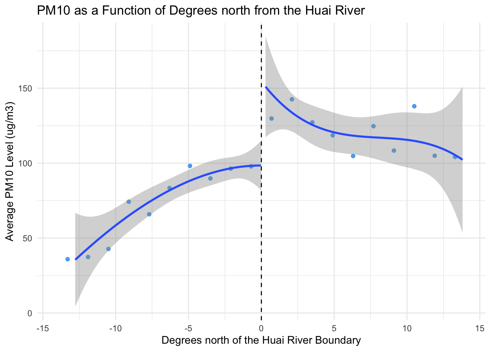
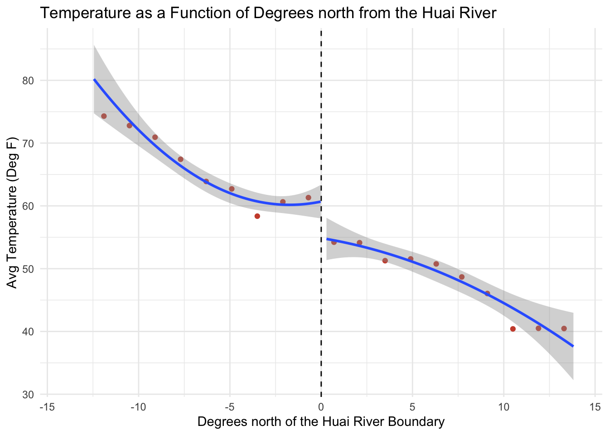
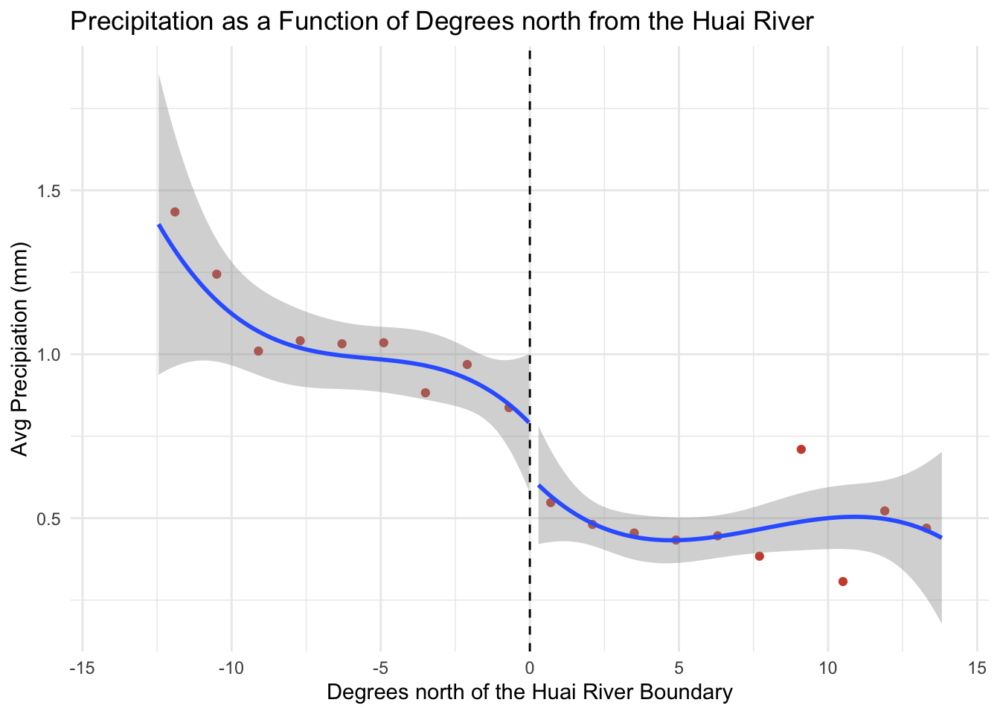
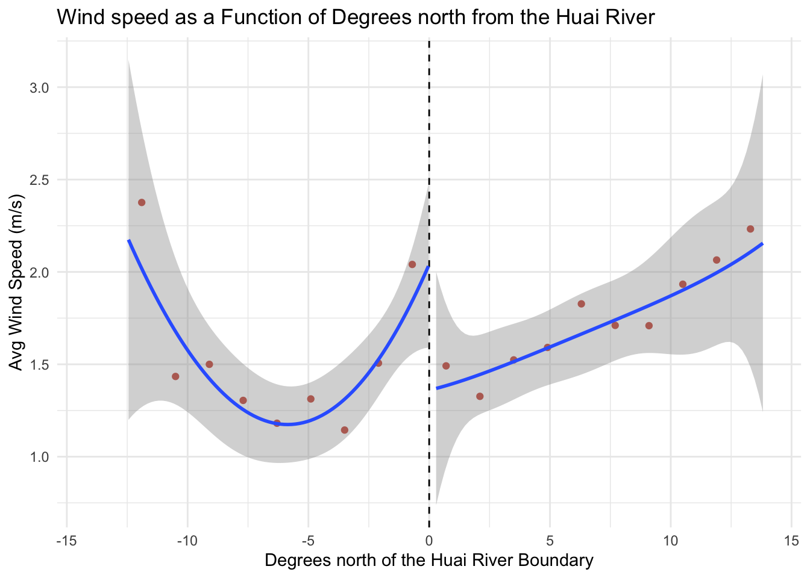
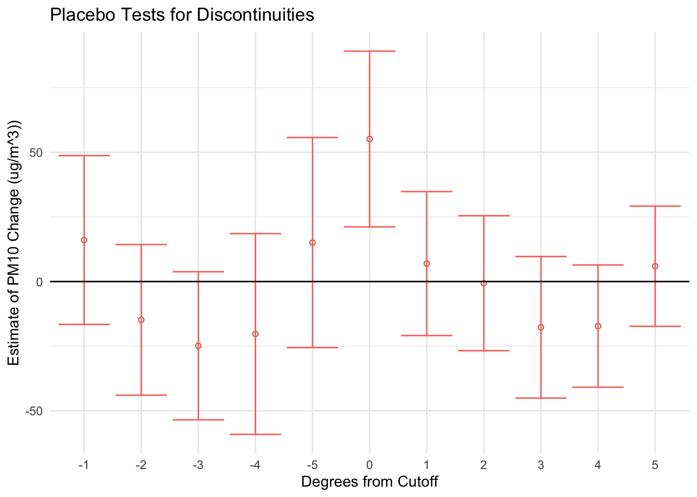

The Effect of the Huai River Policy on Pollution
As part of a project for an Econometrics course in experimental design, I replicate the regression discontinuity approach employed by Ebenstein et al. in New evidence on the impact of sustained exposure to air pollution on life expectancy from China’s Huai River Policy. Ebenstein and his coauthors leverage China’s arbitrary Huai River policy which designated areas north of the Huai River as recipients of free or subsidized coal for indoor heating. The authors focus on estimating the effects of the policy on pollution and life expectancy; I, however, focus solely on the causal estimation of the effects on pollution as the demographic data needed for the analysis of changes in life expectancy is not public.
Camparing the effects of the policy south and north of the Huai River:
A simple comparison of northern cities with southern cities would not be useful to examine causal effects because it does not allow us to single out the effect of the Huai River Policy. Cities in the north of China, say Beijing, can vary drastically from cities in the south, say Shenzhen, whether it is economically, geographically, or demographically. Consequently, changes measured in these regions after the policy implementation cannot be attributed to the policy because the numerous factors that differentiate the regions could also be behind the changes. The regression discontinuity design implemented by Ebenstein et al. addresses this problem by analyzing the changes in the regions right on the border of the river (used as a demarcation line by the policy). The assumption is that towns on both sides of the river will be virtually the same, yet were subject to different costs to access heating do to an arbitrary demarcation choice. Hence, the changes measured post-policy should be attributable to the policy due to the regions’ similarities.
Overall approach:
Globally, the approach is to narrow down the observations to a group of towns/cities near the border of the Huai River and to estimate the change in pollution levels associated with being north of our cutoff (i.e., the river). For the measure of pollution I use the variable pm10 which represents the average level of PM10, a type of particulate matter that adversely affects human health, found in the air. A priori, PM10 levels are expected to increase with higher use of heating. The assignment variable is dist_huai, which denotes the distance in degrees north or south of the Huai river. The other independent variable, north_huai, is a dummy variable which equals one if a town is north of the river and zero otherwise.
Plotting the data:
A discussed earlier, changes in the levels of pollution in regions far away from the cutoff for the policy are not necessarily relevant since it is hard to isolate the effects of the policy. Instead, in a regression discontinuity design, the interest is in the changes observed at and near the cutoff. Specifically, what we intend to examine with a graph is if we observe a discontinuity at the cutoff - in other words, do we see a sudden jump in pollution levels just north of the river?
We’ll use a binned scatter plot, where each bin represents the average of pollution levels for towns at a certain degree from the cutoff. A binned scatter plot is necessary here because it allows us to avoid any overlap of observations that may obfuscate trends in the data, and the bins facilitate dividing the data into degrees from the cutoff.
ggplot() +
# plot points for means of bins
stat_summary_bin(data = river_data, aes(x = dist_huai, y = pm10),
fun.y = 'mean', bins = 20, color = "steelblue2", geom = 'point') +
# Line for discontinuity
geom_vline(xintercept = 0, linetype = "dashed") +
# Fitted line for south of Huai
geom_smooth(data = filter(river_data, north_huai == 0),
aes(x = dist_huai, y = pm10), method = "lm",
formula = y ~ poly(x, 3)) +
# Fitted line for north of Huai
geom_smooth(data = filter(river_data, north_huai == 1),
aes(x = dist_huai, y = pm10), method = "lm",
formula = y ~ poly(x, 3)) +
# Misc settings
labs(title = "PM10 as a Function of Degrees north from the Huai River",
y = "Average PM10 Level (ug/m3)",
x = "Degrees north of the Huai River Boundary") +
scale_x_continuous(n.breaks = 20) +
xlim(-14, 14) +
theme_minimal()
Balance tests:
In essence, with balance tests we examine if characteristics across groups (in this case climatic characteristics across regions) follow similar trends (i.e., are they “balanced”). The goal is to gauge if the treatment, in our case the being north of the Huai River, affects these characteristics; if no significant changes seem to be present, then these tests support any causal relationships found between treatment and outcome.
The carry out these tests, we can generate binned scatter plots of each characteristic available in the data - temperature, precipitation, and wind speed - as a function of location with respect to the Huai River boundary. Running a regression of treatment on these characteristics would give more precise results - statistically significant coefficients indicate a characteristic is not balanced. But since here we are dealing with climatic characteristics, rather than the usual demographic characteristics in random samples, ensuring that the general trend is found across the data suffices.
- Temperature test:
ggplot() +
# plot points for means of bins
stat_summary_bin(data = river_data, aes(x = dist_huai, y = temp),
fun.y = 'mean', bins = 20, color = "tomato3", geom = 'point') +
# Line for discontinuity
geom_vline(xintercept = 0, linetype = "dashed") +
# Fitted line for south of Huai
geom_smooth(data = filter(river_data, north_huai == 0),
aes(x = dist_huai, y = temp), method = "lm",
formula = y ~ poly(x, 2)) +
# Fitted line for north of Huai
geom_smooth(data = filter(river_data, north_huai == 1),
aes(x = dist_huai, y = temp), method = "lm",
formula = y ~ poly(x, 2)) +
# Misc settings
labs(title = "Temperature as a Function of Degrees north from the Huai River",
y = "Avg Temperature (Deg F)",
x = "Degrees north of the Huai River Boundary") +
scale_x_continuous(n.breaks = 20) +
xlim(-14, 14) +
theme_minimal() #+ theme(text = element_text("Roboto Condensed") )
- Precipitation test:
ggplot() +
# plot points for means of bins
stat_summary_bin(data = river_data, aes(x = dist_huai, y = prcp),
fun.y = 'mean', bins = 20, color = "tomato3", geom = 'point') +
# Line for discontinuity
geom_vline(xintercept = 0, linetype = "dashed") +
# Fitted line for south of Huai
geom_smooth(data = filter(river_data, north_huai == 0),
aes(x = dist_huai, y = prcp), method = "lm",
formula = y ~ poly(x, 3)) +
# Fitted line for north of Huai
geom_smooth(data = filter(river_data, north_huai == 1),
aes(x = dist_huai, y = prcp), method = "lm",
formula = y ~ poly(x, 3)) +
# Misc settings
labs(title = "Precipitation as a Function of Degrees north from the Huai River",
y = "Avg Precipiation (mm)",
x = "Degrees north of the Huai River Boundary") +
scale_x_continuous(n.breaks = 20) +
xlim(-14, 14) +
theme_minimal()
- Wind speed test:
ggplot() +
# plot points for means of bins
stat_summary_bin(data = river_data, aes(x = dist_huai, y = wspd),
fun.y = 'mean', bins = 20, color = "tomato3", geom = 'point') +
# Line for discontinuity
geom_vline(xintercept = 0, linetype = "dashed") +
# Fitted line for south of Huai
geom_smooth(data = filter(river_data, north_huai == 0),
aes(x = dist_huai, y = wspd), method = "lm",
formula = y ~ poly(x, 3)) +
# Fitted line for north of Huai
geom_smooth(data = filter(river_data, north_huai == 1),
aes(x = dist_huai, y = wspd), method = "lm",
formula = y ~ poly(x, 4)) +
# Misc settings
labs(title = "Wind speed as a Function of Degrees north from the Huai River",
y = "Avg Wind Speed (m/s)",
x = "Degrees north of the Huai River Boundary") +
scale_x_continuous(n.breaks = 20) +
xlim(-14, 14) +
theme_minimal()
In the case of temperature and precipitation, we find there are very slight differences when crossing the cutoff, but most importantly we see the same trend is present north and south of the river. The case of wind speed is trickier, as we see a slight discontinuity at the river as well as potentially different trends. An significant note in this case, however, is that the change in trends that seems to be present at the cutoff looks to be primarily driven by the wind speed average of towns 1 degree south of the cutoff, which could be an outlier.
Setting a bandwidth:
To analyse the effects of the Huai River policy, to narrow down the group of observations used to towns near the cutoff as we need towns that are subject to similar conditions. If we satisfy this condition, then we strengthen the assumption that the Huai River policy is the main driver of any changes in pollution levels. We will narrow down the group of towns used by setting a five-degree bandwidth - in practice, this translates to only examining changes in towns that are 5 degrees or less away from the Huai river (i.e., our cutoff).
- Bandwidth of 5 degrees: \(c - 5 \le X \le c + 5\)
Estimating the discontinuity:
The specification used will be the following:
\(pm10 = \alpha + \beta_{1} north + \beta_{2} distance + \beta_{3} north \cdot distance + \epsilon_i\)
where we regress PM10 levels on the dummy for whether a town is north of the river, north_huai, on the degrees from the river, dist_huai, and on their interaction.
# Regress distance from pm10 on distance from Huai
reg_pm10 <- lm(pm10 ~ north_huai*dist_huai, filter(river_data, dist_huai >= -5 & dist_huai <= 5))
# 95% Confidence intervals
ci_reg_pm10 <- confint.lm(reg_pm10)
# Regress distance from temperature on distance from Huai
reg_temp <- lm(temp ~ north_huai*dist_huai, filter(river_data, dist_huai >= -5 & dist_huai <= 5))
# 95% Confidence intervals
ci_reg_temp <- confint.lm(reg_temp)
# Regress distance from precipitation on distance from Huai
reg_prcp <- lm(prcp ~ north_huai*dist_huai, filter(river_data, dist_huai >= -5 & dist_huai <= 5))
# 95% Confidence intervals
ci_reg_prcp <- confint.lm(reg_prcp)
# Regress distance from wind speed on distance from Huai
reg_wspd <- lm(wspd ~ north_huai*dist_huai, filter(river_data, dist_huai >= -5 & dist_huai <= 5))
# 95% Confidence intervals
ci_reg_wspd <- confint.lm(reg_wspd)
Balance Tests
=====================================================================================
Dependent variable:
--------------------------------------------------------------------
PM10 Temperature Precipitation Wind Speed
(1) (2) (3) (4)
-------------------------------------------------------------------------------------
Treatment 55.143*** -5.815* -0.265** -0.627*
(21.701, 88.585) (-11.998, 0.367) (-0.524, -0.006) (-1.247, -0.007)
Running Variable 1.266 0.518 -0.034 0.186***
(-6.016, 8.548) (-0.829, 1.865) (-0.090, 0.022) (0.051, 0.321)
Interaction -10.185 -1.474 0.001 -0.136
(-22.614, 2.243) (-3.748, 0.800) (-0.094, 0.096) (-0.364, 0.092)
Constant 98.679*** 61.338*** 0.833*** 1.961***
(80.043, 117.316) (57.865, 64.812) (0.687, 0.978) (1.613, 2.310)
-------------------------------------------------------------------------------------
Observations 79 79 79 79
=====================================================================================
Note: *p<0.1; **p<0.05; ***p<0.01Identification Assumption:
In a regression discontinuity design, the identification assumption is that the only reason for discrete jumps in the dependent variable around the cutoff are changes in assignment to the cutoff. In other words, observations on either side of the cutoff would have similar outcomes absent of treatment. The identification assumption is violated when individuals have precise control over which side of the cutoff they will be on (i.e., they have control over the assignment variable).
When graphing bin scatter plots of temperature, precipitation and wind speed as a function of degrees north of the cutoff, we find that there is a jump at the discontinuity but the trends remain constant for the most part. In the case of temperature the jump at the cutoff is small and the (mostly) linear trend is constant - I say mostly because south of a cutoff we see a quadratic trend but this is driven primarily by the bin for the observations closest to the cutoff, so we can assume some noise here. The jump for precipitation is also rather small and the cubic trend in the data is constant. The case of wind speed is more challenging to evaluate graphically as the data looks more spurious than in the earlier cases; south of the cutoff we see a quadratic trend in the data and north of the cutoff we see what could be a cubic trend but with very slight variation. Moreover, the jump, or rather drop, at the discontinuity for wind speed is more pronounced. The tests done with regressions, however, do not find any significant effects associated with treatment on temperature, precipitation and wind speed. These tests show that absent of treatment, similar trends would be followed; therefore the tests indicate that the identification assumption was not violated.
Is the issue of manipulation relevant in this case?
Manipulation is relevant in studies in which individuals, who are part of the study and whose outcomes are measured, may have control over assignment of treatment (i.e., placement before or after cutoff). If that were the case, then the regression discontinuity design would fail since it would violate the key assumption that individuals on both sides of the cutoff would have similar outcomes. In the case of the Huai river policy study, the assignment of treatment (subsidized heating) is completely arbitrary as it is based on a geographical feature (the river). Additionally, the outcomes we are concerned with here are not those of individuals who could change their location based on the cutoff, but rather pollution levels which are directly dependent on geographical location. Therefore, manipulation is not an issue.
What if we were measureing indivuals’ outcomes?
If as part of the study we were to actually measure outcomes of individuals, for example life expectancy, then we would have to run a manipulation test to ensure individuals did not have control over assignment north of the cutoff to access the subsidized heating. To do so, plotting the distribution of individuals’ locations with respect to the cutoff. The proper distributions that would pass the manipulation test would vary as they are highly contextual. In our case, the distribution would not be normal but rather it would depend on the geographical location of cities. They key would be to examine if there is a concentration of individuals right north of the Huai river, indicating whether individuals moved specifically top secure the subsidized heating. Unfortunately, we cannot run this test because, as previously mentioned, the demographic data is not public.
Placebo test:
Why is a placebo test necessary?
A discontinuity at the cutoff boundary, is indicative of a potential effect stemming from the Huai River policy. However, if we find that discontinuities are present in other parts of the data, then the conclusions of the main cutoff are undermined. A placebo test can be used to examine these possibilities; specifically in our case, the placebo test examines whether discontinuities are found in other regions China as a result of the Huai River policy.
Running the placebo test:
The placebo test can be ran by plotting the estimated discontinuities in pollution levels of PM10 at one degree latitude intervals north and south. Th essence of the test is to
# Create new variable, `placebo_dist_huai`, that where observations are shifted 1 degree north
river_data %<>% mutate(dist_huai_1 = dist_huai + 1,
placebo_indic_1 = ifelse(dist_huai_1 >= 0, 1, 0))
river_data %<>% mutate(dist_huai_2 = dist_huai + 2,
placebo_indic_2 = ifelse(dist_huai_2 >= 0, 1, 0))
river_data %<>% mutate(dist_huai_3 = dist_huai + 3,
placebo_indic_3 = ifelse(dist_huai_3 >= 0, 1, 0))
river_data %<>% mutate(dist_huai_4 = dist_huai + 4,
placebo_indic_4 = ifelse(dist_huai_4 >= 0, 1, 0))
river_data %<>% mutate(dist_huai_5 = dist_huai + 5,
placebo_indic_5 = ifelse(dist_huai_5 >= 0, 1, 0))
river_data %<>% mutate(dist_huai_neg1 = dist_huai - 1,
placebo_indic_neg1 = ifelse(dist_huai_neg1 >= 0, 1, 0))
river_data %<>% mutate(dist_huai_neg2 = dist_huai - 2,
placebo_indic_neg2 = ifelse(dist_huai_neg2 >= 0, 1, 0))
river_data %<>% mutate(dist_huai_neg3 = dist_huai - 3,
placebo_indic_neg3 = ifelse(dist_huai_neg3 >= 0, 1, 0))
river_data %<>% mutate(dist_huai_neg4 = dist_huai - 4,
placebo_indic_neg4 = ifelse(dist_huai_neg4 >= 0, 1, 0))
river_data %<>% mutate(dist_huai_neg5 = dist_huai - 5,
placebo_indic_neg5 = ifelse(dist_huai_neg5 >= 0, 1, 0))# Run reg of PM[10] on north_huai and new placebo distance variable (placebo_dist_huai)
placebo_reg1 <- lm(pm10 ~ dist_huai_1*placebo_indic_1,
filter(river_data, dist_huai_1 >= -5 & dist_huai_1 <=5))
placebo_reg2 <- lm(pm10 ~ dist_huai_2*placebo_indic_2,
filter(river_data, dist_huai_2 >= -5 & dist_huai_2 <=5))
placebo_reg3 <- lm(pm10 ~ dist_huai_3*placebo_indic_3,
filter(river_data, dist_huai_3 >= -5 & dist_huai_3 <=5))
placebo_reg4 <- lm(pm10 ~ dist_huai_4*placebo_indic_4,
filter(river_data, dist_huai_4 >= -5 & dist_huai_4 <=5))
placebo_reg5 <- lm(pm10 ~ dist_huai_5*placebo_indic_5,
filter(river_data, dist_huai_5 >= -5 & dist_huai_5 <=5))
placebo_reg_neg1 <- lm(pm10 ~ dist_huai_neg1*placebo_indic_neg1,
filter(river_data, dist_huai_neg1 >= -5 & dist_huai_neg1 <=5))
placebo_reg_neg2 <- lm(pm10 ~ dist_huai_neg2*placebo_indic_neg2,
filter(river_data, dist_huai_neg2 >= -5 & dist_huai_neg2 <=5))
placebo_reg_neg3 <- lm(pm10 ~ dist_huai_neg3*placebo_indic_neg3,
filter(river_data, dist_huai_neg3 >= -5 & dist_huai_neg3 <=5))
placebo_reg_neg4 <- lm(pm10 ~ dist_huai_neg4*placebo_indic_neg4,
filter(river_data, dist_huai_neg4 >= -5 & dist_huai_neg4 <=5))
placebo_reg_neg5 <- lm(pm10 ~ dist_huai_neg5*placebo_indic_neg5,
filter(river_data, dist_huai_neg5 >= -5 & dist_huai_neg5 <=5))# Find confidence intervals
ci_0 <- confint.lm(reg_pm10)[2, 1:2]
ci_1 <- confint.lm(placebo_reg1)[3, 1:2]
ci_2 <- confint.lm(placebo_reg2)[3, 1:2]
ci_3 <- confint.lm(placebo_reg3)[3, 1:2]
ci_4 <- confint.lm(placebo_reg4)[3, 1:2]
ci_5 <- confint.lm(placebo_reg5)[3, 1:2]
ci_neg1 <- confint.lm(placebo_reg_neg1)[3, 1:2]
ci_neg2 <- confint.lm(placebo_reg_neg2)[3, 1:2]
ci_neg3 <- confint.lm(placebo_reg_neg3)[3, 1:2]
ci_neg4 <- confint.lm(placebo_reg_neg4)[3, 1:2]
ci_neg5 <- confint.lm(placebo_reg_neg5)[3, 1:2]
# Bind confidence intervals
conf_ints <- bind_rows(ci_neg5, ci_neg4, ci_neg3,
ci_neg2, ci_neg1, ci_0, ci_1,
ci_2, ci_3, ci_4, ci_5)
# Tidy-s
estim_1 <- tidy(placebo_reg1)[3, 2]
estim_2 <- tidy(placebo_reg2)[3, 2]
estim_3 <- tidy(placebo_reg3)[3, 2]
estim_4 <- tidy(placebo_reg4)[3, 2]
estim_5 <- tidy(placebo_reg5)[3, 2]
estim_0 <- tidy(reg_pm10)[2, 2] #Index 2nd row, not 3rd, bc reg has variables in != order
estim_neg1 <- tidy(placebo_reg_neg1)[3, 2]
estim_neg2 <- tidy(placebo_reg_neg2)[3, 2]
estim_neg3 <- tidy(placebo_reg_neg3)[3, 2]
estim_neg4 <- tidy(placebo_reg_neg4)[3, 2]
estim_neg5 <- tidy(placebo_reg_neg5)[3, 2]
# Bind estimates
estimates <- bind_rows(estim_neg5, estim_neg4, estim_neg3,
estim_neg2, estim_neg1, estim_0, estim_1,
estim_2, estim_3, estim_4, estim_5)# Create vector for row names
degs <- c("-5", "-4", "-3", "-2", "-1", "0", "1", "2", "3", "4", "5")
# Create dataframes by binding row names, estimates vector and confidence interval vectors
placebo_estimates <- bind_cols(degs, estimates, conf_ints)
# Change column names
colnames(placebo_estimates) <- c("degs_shifted", "estimates", "lower", "upper")# Graph
ggplot(placebo_estimates) +
geom_point(aes(x = degs_shifted, y = estimates), color = "tomato3", shape = 21) +
geom_errorbar(aes(ymin = lower, ymax = upper, y = estimates, x = degs_shifted,
color = "tomato3")) +
geom_hline(yintercept = 0) +
labs(title = "Placebo Tests for Discontinuities",
x = "Degrees from Cutoff", y = "Estimate of PM10 Change (ug/m^3))") +
theme_minimal() +
theme(legend.position = "none")
The only significant coefficient estimate of a discontinuity is that of the actual cutoff (the Huai river), with an estimate slightly above 50 without a possible effect of zero within the confidence intervals. Thus, the results show that no other region has statistically significant discontinuous changes in PM10.